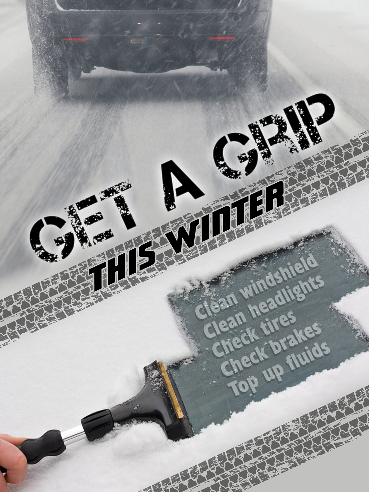

Top Tips
We have compiled the best tipes for dealing with the sealttle snopocolypse convergence zone
How to survive in the insanity that is Seattle for the coming snow apocolypse in Seattle 2019
We have compiled the best tipes for dealing with the sealttle snopocolypse convergence zone
In Seattle it is madatory for people to drive irresponsibily. The means tailgating, braking on ice, rapid accelerations and failure to signal
In the coming apocolypse it will be required that you empty the store shevles before your neightbor and make sure that none of your neightbors has access to your apocolyptic food stores.
In Seattle we find that people do best when they use universal hand signals which everyone understands. It is key to use only one finger when communicating displeasure with someones driving